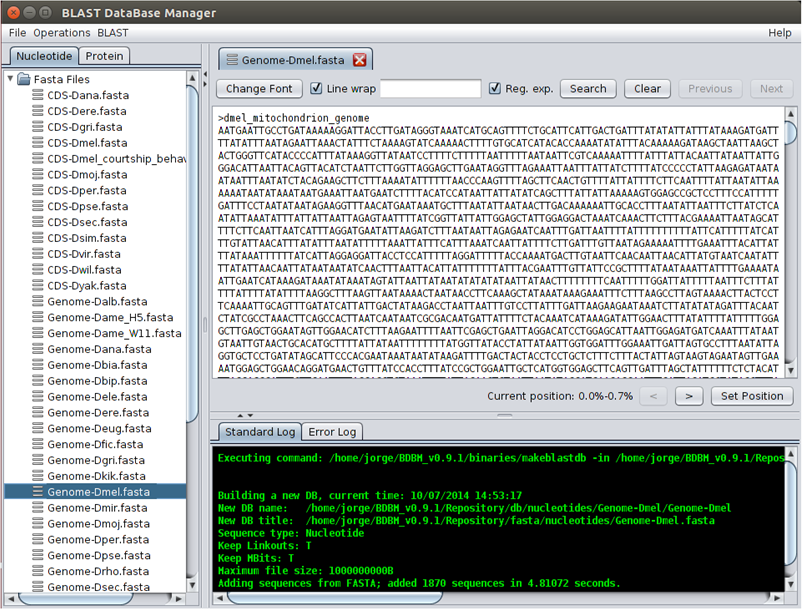

All text (such as FASTA) files can be viewed by double clicking on top of the selected file. The Line wrap checkbox allows the wrapping of the lines, an option that is useful when dealing with files with long text lines. The letter type and size can be changed in the Change Font pop-up menu. It is also possible to search for regular expressions. To find the next and previous hit use the Next and Previous buttons, respectively. The Clear button clears the search. Since genome and transcriptome files are usually very long only a fraction of the document is shown in the BDBM window. Different portions of the file can be viewed using the Set Position button.

Viewing and searching files